from sikuli import *
from common import *
import random
Res_Food = 0
Res_Wood = 1
Res_Iron = 2
Res_Silver = 3
resourceImages = [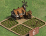, 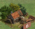, 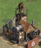, 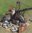]
convoyImages = [, , 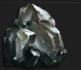, ""]
NoTroops = 100
resources = []
def inOccupied(coord, occupied):
Debug.log(1, "CALL kingdom.inOccupied %1$s %2$s", [coord, occupied])
for p in occupied:
if distance(coord, p) < 15:
return True
return False
def occupyResource(region, resKind, occupied):
Debug.log(1, "CALL kingdom.occupyResource")
img = resourceImages[resKind]
try:
closePopups(region)
tiles = region.findAll(img)
for t in tiles:
closePopups(region)
if inOccupied(t, occupied):
continue
clickRnd(t)
occupy = region.exists(, 2)
if occupy:
clickRnd(occupy)
if region.exists(, 2):
clickBack()
sleep(3)
return NoTroops
clickRnd( region.wait(, 3) )
if region.exists(, 2):
clickBackN(2)
return NoTroops
if region.exists(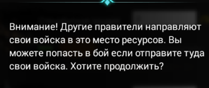, 2):
clickBack()
sleep(3)
else:
return t.getCenter()
else:
while True:
p2 = pointRnd(region.grow(-120, -220))
if distance(t.getCenter(), p2) > 100:
region.click(p2)
break
except FindFailed:
return None
return None
def moveRnd(owner, coords_for_shift):
print "kingdom.moveRnd call ", owner
beg_idx = random.randint(1, 7)
while True:
end_idx = random.randint(0, 7)
if beg_idx != end_idx:
break
count = random.randint(1, 3)
inner_reg = owner.grow(-100)
print "owner: ", owner, "inner_reg: ", inner_reg
beg_reg = screenPartToRegion(inner_reg, beg_idx)
end_reg = screenPartToRegion(inner_reg, end_idx)
for i in range(0, count):
closePopups(owner)
beg_point = pointRnd(beg_reg)
end_point = pointRnd(end_reg)
slowDragDrop(owner, beg_point, end_point)
shift = Location(end_point.x - beg_point.x, end_point.y - beg_point.y)
return shiftCoords(coords_for_shift, shift)
def collectResources(owner, resKind):
Debug.log(1, "CALL kingdom.collectResources")
occupied = []
while True:
closePopups(owner)
more = owner.exists()
if more != None:
break
for i in range(0, 30):
tile = occupyResource(owner, resKind, occupied)
if tile == NoTroops:
return()
if tile == None:
occupied = moveRnd(owner, occupied)
else:
occupied.append(tile)
break
print "kingdom.collectResources finished"
def returnTroops(region):
print "kingdom.returnTroops call"
while True:
back = region.exists(, 1)
if back != None:
clickRnd(back)
clickRnd( wait(, 3) )
else:
break
print "kingdom.returnTroops finished"
def checkForOccupied(region):
print "kingdom.checkForOccupied call"
try:
for b in region.findAll():
occupied = b.left(200).exists(, 1)
if occupied != None:
occupied.highlight(2)
print "Ruins are already occupied."
return True
except FindFailed:
print "No back buttons found. Ready to seek for ruins"
return False
def occupyRuins(region):
print "kingdom.occupyRuins call"
if checkForOccupied(region):
return()
while True:
ruin = region.exists(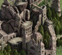, 1)
if ruin != None:
print "Ruins found"
ruin = moveToCenter(region, ruin)
clickRnd(ruin)
region.click()
if region.exists(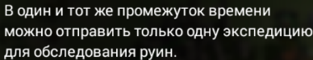):
print "One march is in ruins."
clickBack()
return()
buttons = region.findAll( precise(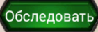) )
sorted_buttons = sorted(buttons, key=lambda m:m.y, reverse=True)
for sb in sorted_buttons:
try:
clickRnd(sb)
if exists():
print "Maximum number of march"
clickBack()
return()
else:
clickRnd( region.find() )
print "Ruins are occupied"
return()
except FindFailed:
continue
else:
print "Ruins not found, moving random"
moveRnd(region, [])
def underShild(region):
print "kingdom.underShild call"
res = False
print "kingdom.underShild returns:", res
return res
def setupCamps(region):
print "kingdom.setupCamps call"
backToNormalView(region)
while True:
for i in range(0, 15):
p1 = pointRnd(region.grow(-120, -220))
region.click(p1)
tp = region.exists()
if tp != None:
try:
clickRnd( tp.right(150).grow(20).find(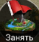) )
if region.exists( ) != None:
print "Can't set up a camp. Maximum march number"
clickBack()
else:
clickRnd( find() )
return True
except FindFailed:
print "Seize button not found or another strange things occur"
clickRnd(region.grow(-150, -200))
sleep(2)
while True:
p2 = pointRnd(region.grow(-120, -220))
if distance(p1, p2) > 100:
region.click(p2)
backToNormalView(region)
break
moveRnd(region, [])
def returnCamps(region):
print "kingdom.returnCamps call"
backToNormalView(region)
try:
for b in region.findAll( precise()):
print "Back button checking"
iscamp = b.left(200).exists(, 1)
if iscamp != None:
print "Troops are returning from the camp."
clickRnd(b)
clickRnd( wait(, 2) )
return True
else:
print "It is not a camp"
except FindFailed:
print "No back buttons found. No troops to return."
return False
def troopsMustGo(region):
print "kingdom.troopsMustGo call"
occupyRuins(region)
if not underShild(reguin):
returnCamps(region)
setupCamps(region)
print "kingdom.troopsMustGo finished"
def showSafeZone(region, zone):
print "kingdom.showSafeZone call"
if modes.setMode(win, modes.Mode_Kingdom):
clickRnd(zone)
modes.setMode(win, modes.Mode_Map)
print "kingdom.showSafeZone finished"
def sendResources(region, whom, resKind):
Debug.log(1, "CALL acount.sendResources")
backToNormalView(region)
clickImagesRnd(region, [, 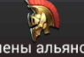, ])
if whom == "Buzuk":
clickRnd( region.find() )
else:
Debug.log(1, "Convoy destination not found")
return()
clickRnd( region.find() )
res = region.find(convoyImages[resKind])
beg_point = pointRnd( res.right(200).find() )
end_point = pointRnd( res.right(700).find() )
slowDragDrop(region, beg_point, end_point)
clickRnd( region.find() )
) != None:
print "Can't set up a camp. Maximum march number"
clickBack()
else:
clickRnd( find() )
return True
except FindFailed:
print "Seize button not found or another strange things occur"
clickRnd(region.grow(-150, -200))
sleep(2)
while True:
p2 = pointRnd(region.grow(-120, -220))
if distance(p1, p2) > 100:
region.click(p2)
backToNormalView(region)
break
moveRnd(region, [])
def returnCamps(region):
print "kingdom.returnCamps call"
backToNormalView(region)
try:
for b in region.findAll( precise()):
print "Back button checking"
iscamp = b.left(200).exists(, 1)
if iscamp != None:
print "Troops are returning from the camp."
clickRnd(b)
clickRnd( wait(, 2) )
return True
else:
print "It is not a camp"
except FindFailed:
print "No back buttons found. No troops to return."
return False
def troopsMustGo(region):
print "kingdom.troopsMustGo call"
occupyRuins(region)
if not underShild(reguin):
returnCamps(region)
setupCamps(region)
print "kingdom.troopsMustGo finished"
def showSafeZone(region, zone):
print "kingdom.showSafeZone call"
if modes.setMode(win, modes.Mode_Kingdom):
clickRnd(zone)
modes.setMode(win, modes.Mode_Map)
print "kingdom.showSafeZone finished"
def sendResources(region, whom, resKind):
Debug.log(1, "CALL acount.sendResources")
backToNormalView(region)
clickImagesRnd(region, [, 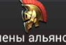, ])
if whom == "Buzuk":
clickRnd( region.find() )
else:
Debug.log(1, "Convoy destination not found")
return()
clickRnd( region.find() )
res = region.find(convoyImages[resKind])
beg_point = pointRnd( res.right(200).find() )
end_point = pointRnd( res.right(700).find() )
slowDragDrop(region, beg_point, end_point)
clickRnd( region.find() )